Gesava2 Aplicadors
Gesava2 - Aplicadors
Índex de continguts
1. Accés a l'aplicació
Per accedir a l'aplicació seguiu les següents passes:
-
Cliqueu sobre la imatge "Accés GESAVA"
 de la part superior dreta d'aquesta pantalla.
de la part superior dreta d'aquesta pantalla. Us apareixerà la pàgina d'accés a l'aplicació en la qual heu d'introduir l'usuari i contrasenya que us ha proporcionat l'equip directiu del vostre centre. El vostre usuari comença amb les lletres APLI-. Aneu en compte d'escriure exactament els camps, respectant majúscules minúscules i sense deixar espais en blanc.
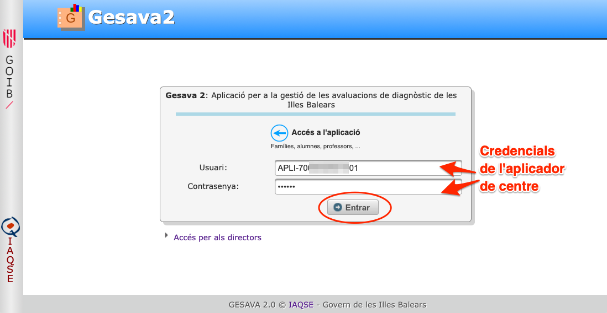-
Una vegada validats, us apareixerà la pantalla d'inici d'aplicador on trobareu una taula que conté tots els grups / matèria.
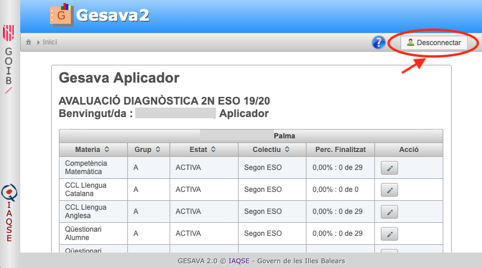 Molt Important! Recordeu a tancar la sessió pitjant sobre el botó "Desconnecta" quan hagueu acabat.
2. Descarregar claus i qüestionaris en paper
2.1 Claus dels alumnes
-
En el cas que els alumnes hagin de realitzar qüestionaris d'alumne, ho faran online. Per això, necessitaran disposar d'usuari i clau d'accés a Gesava2. A la taula de grups/matèries, cercau la matèria "Qüestionari d'alumne". Si no us apareix aquesta matèria, vol dir que l'avaluació actual no té associat aquests qüestionaris.
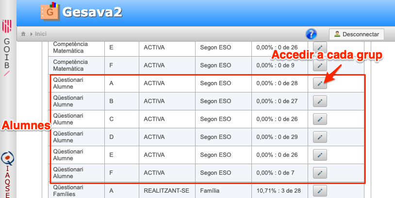 Clicau sobre el botó d'un grup per accedir a ell. S'obrirà una pantalla amb el llistat d'alumnes del grup. Anau a la part inferior de la pantalla on trobareu botons d'acció. Clicau sobre "Llistat claus continu".
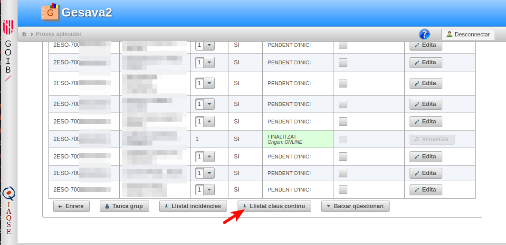Obtindreu un fitxer PDF que podreu imprimir, retallar i repartir als alumnes
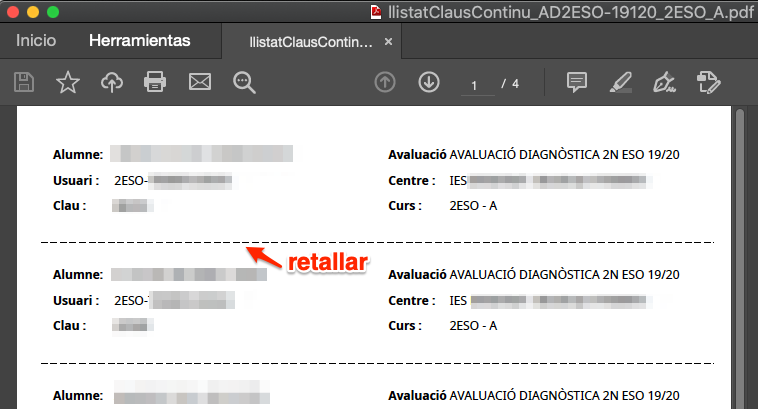
2.2 Claus de les famílies
A la pantalla inicial d'aplicador accediu a cada grup/matèria que tingui per nom "Qüestionari famílies". Accediu a la pàgina de cada grup i, a la part inferior de la pàgina, trobareu els botons d'acció. Clicau sobre el botó "Llistat claus continu Fam.".
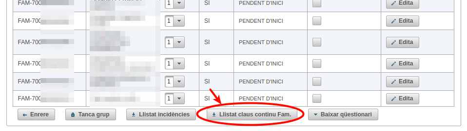-
Obtindreu un fitxer PDF que podreu imprimir, retallar i repartir a les famílies dels alumnes
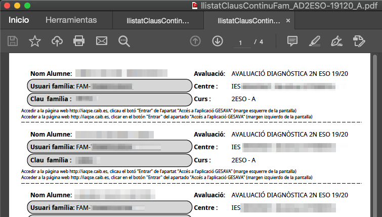
2.3 Qüestionaris de les famílies en paper
S'ha de fomentar que les famílies realitzin el qüestionari online mitjançant els usuaris i contrasenyes obtinguts a l'apartat 2.2. No obstant això, si alguna família sol·licita poder fer el qüestionari en paper, veurem com descarregar-lo.
Aneu a la pàgina inicial de l'aplicador. Cercau els grups/matèria amb nom "Qüestionari famílies" i accediu a ells. A la part inferior de la pàgina de cada grup trobareu botons d'acció. Cliqueu sobre "Baixar qüestionari" i trieu l'idioma que vulgueu.
Obtindreu un PDF amb els qüestionaris de família de tots els alumnes del grup. A l'hora d'imprimir, seleccioneu només les pàgines que necessiteu.
3. Descarregar fulls d'incidències i respostes
El dia de la prova de cada matèria avaluable, la persona encarregada d'aplicar la prova necessitarà tenir impresos els fulls de respostes, on els alumnes escriuran les respostes de les preguntes, i els fulls d'incidències allà on l'aplicador de la prova podrà escriure comentaris de seguiment.
Anau a la pàgina inicial de l'aplicador i seleccioneu els grups/matèria que necessiteu. Per exemple, clicam sobre la matèria "Competència Matemàtica" del grup A. En la part inferior de la pantalla del grup, trobam els botons "Llistat d'incidències" i "Baixar fulls de respostes". Pel cas de la competència matemàtica, els fulls de respostes estan disponibles en dos idiomes.
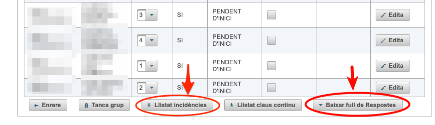
Els fulls de resposta s'han d'imprimir i s'aconsella fer-ho a doble cara. És recomanable que a l'hora d'imprimir seleccioneu l'opció "Ajusta" per evitar que pugui quedar contingut fora dels marges de la pàgina
5. Introduir respostes d'un qüestionari de família
-
Des de la pàgina inicial de l'aplicador, trieu el grup/matèria "Qüestionari famílies" i accediu a ell.
-
Cerqueu el nom de l'alumne del qual heu d'introduir el qüestionari de família en paper. Cliqueu el botó
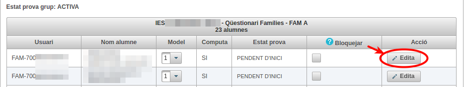 Una vegada s'ha carregat la pàgina del qüestionari us demanarà que introduïu l'idioma en què s'ha realitzat el qüestionari per poder continuar.

-
Una vegada s'han carregat les preguntes, veureu que la primera està activa i apareix remarcada amb un fons blau. Basta que pitgeu la tecla de l'opció contestada A, B, C, ... o X si la família no ha contestat aquella pregunta. Aquesta és la forma més ràpida per introduir respostes però, si voleu, també podeu anar triant les opcions de cada menú desplegable.
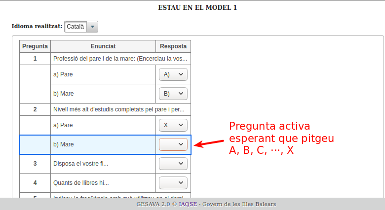És molt important que al final del qüestionari no hagi cap pregunta "en blanc" o sense opció introduïda, sinó el programa no us deixarà desar.
Quan hagueu emplenat la resposta de la darrera pregunta del qüestionari, heu de pitjar el botó "Desar i finalitzar". Recordau que una vegada finalitzat, no es permet fer més canvis en el qüestionari.
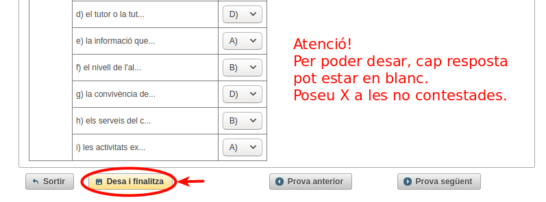Us apareixerà un diàleg de confirmació en el qual heu de pitjar el botó "Desar i finalitzar" o la tecla INTRO.
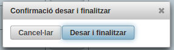Si tot ha anat bé, a la part superior dreta de la pantalla veureu un missatge de confirmació
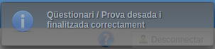Si pitjau el botó "Sortir", tornareu al llistat del grup i podreu comprovam com l'estat del qüestionari ha passat a finalitzat. A partir d'ara, es podran consultar aquells qüestionaris que tinguin "Origen: APLICADOR" però no permetrà fer més canvis. Els qüestionaris amb "Origen: ONLINE" les han contestat les famílies via online però, per privacitat, l'aplicador no en té accés.
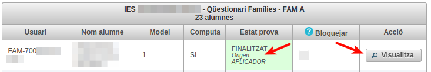
6. Introduir respostes d'una prova diagnòstica
El procés per introduir les respostes d'una prova diagnòstica és molt semblant a l'explicat a l'apartat anterior. La única diferència és que ara la matèria és avaluable i existeixen preguntes obertes en les quals s'ha d'introduir la puntuació.
-
Des de la pàgina inicial de l'aplicador, trieu el grup/matèria que us interessi, per exemple, "Competència matemàtica" i accediu a ell.
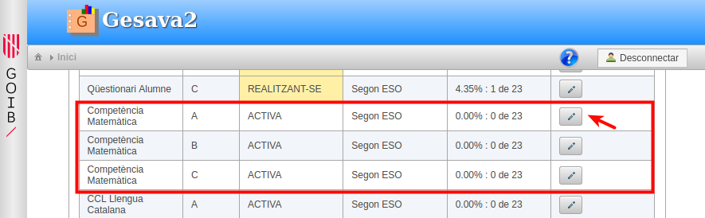Si el vostre centre és mostral, algunes proves seran realitzades per un aplicador extern. En tal cas, veureu el text "Mostral" devora el botó d'accés al grup/matèria. Això significa que hi teniu accés però només podreu fer consultes.
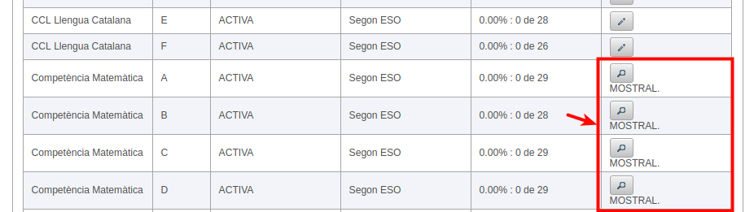 -
A la columna model apareix el numero de model assignat a cada alumne. Comproveu que no hi ha hagut cap canvi en el grup i, en cas que n'hi hagi, modificau el número de model mitjançant el menú desplegable.
Cliqueu sobre el botó del primer alumne del grup.
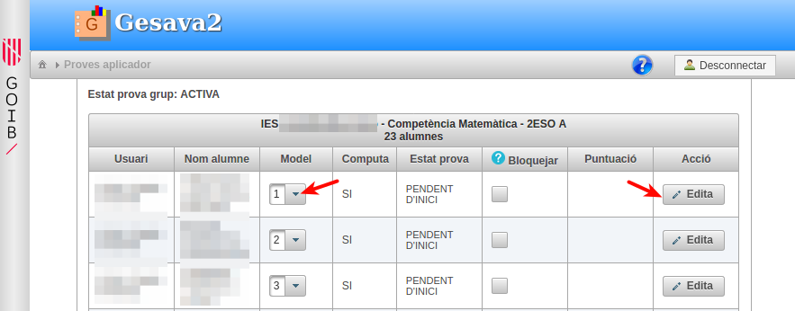 Una vegada s'ha carregat la pàgina, si la prova admet més d'un idioma, com per exemple la competència matemàtica, caldrà que introduïu l'idioma en què s'ha fet la prova per poder continuar.
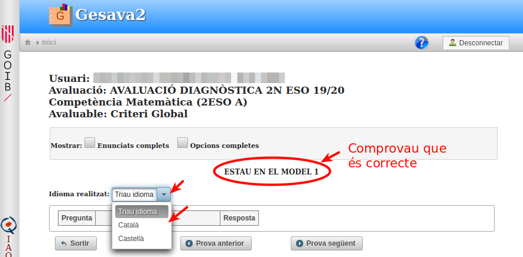-
Una vegada s'han carregat les preguntes, veureu que la primera està activa i apareix remarcada amb un fons blau.
Hi ha preguntes obertes i tancades. El menú de les obertes estan remarcades amb color salmó i admeten les opcions X, 0, 1, ···. Les tancades admeten opcions X, A, B, C, ···.
Basta que pitgeu la tecla de l'opció contestada A, B, ···, 0, 1, ··· o X si l'alumne ha deixat la pregunta en blanc. Veureu com, una vegada pitjada la tecla, la pregunta activa passa automàticament a la següent. Aquesta és la forma més ràpida per introduir respostes però, si voleu, també podeu anar triant les opcions de cada menú desplegable.
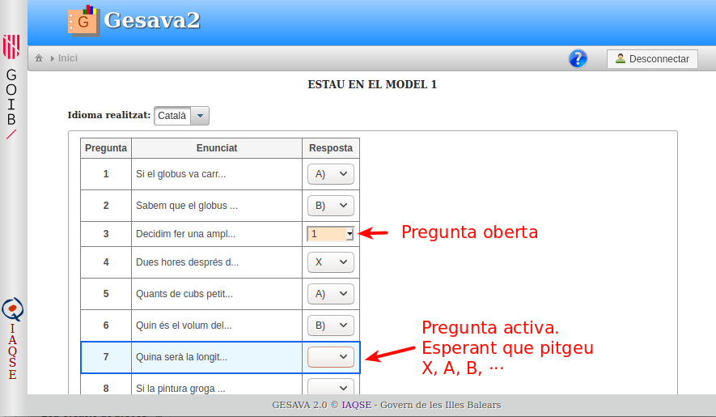És molt important que al final del qüestionari no hagi cap pregunta "en blanc" o sense opció introduïda, sinó el programa no us deixarà desar.
Quan hagueu emplenat la resposta de la darrera pregunta del qüestionari, heu de pitjar el botó "Desar i finalitzar". Recordau que una vegada finalitzat, no es permet fer més canvis a la prova.
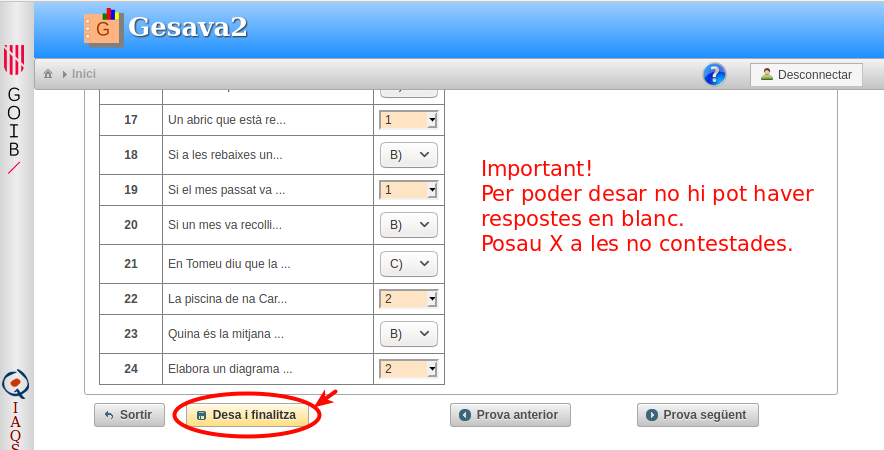Us apareixerà un diàleg de confirmació en el qual heu de pitjar el botó "Desar i finalitzar" o la tecla INTRO.
Si tot ha anat bé, a la part superior dreta de la pantalla veureu un missatge de confirmació
Podeu anar de forma ràpida a l'alumne següent de la llista pitjant sobre el botó . Si pitjau el botó "Sortir", tornareu al llistat del grup i podreu comprovam com l'estat de la prova ha passat a finalitzat. Es podran consultar aquelles proves que tinguin "Origen: APLICADOR" però no se'n permetrà fer més canvis.
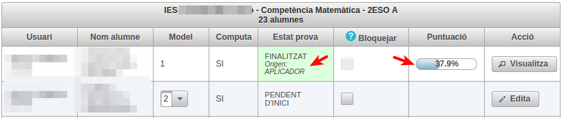- Si algun alumne el grup no ha fet la prova, marcau la columna "Bloquejar".
- Quan tots els alumnes del grup tinguin les respostes introduïdes o hagin estat bloquejats, el grup passarà a prova/grup "TANCADA".